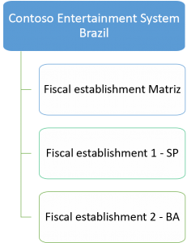

Parameters for legal entities in Brazil
To collect and submit tax statements that report on performance, a Brazilian legal entity requires specific fiscal information. This topic explains how to set the parameters to specify this information.
Brazilian legal entity overview
A Brazilian legal entity is organized by fiscal establishments that function in the same way and are in the same operations of a branch. There is a primary fiscal establishment that is considered the Matriz, and related fiscal establishments that are located in other states or outside Brazil. The following illustration shows the structure of a Brazilian legal entity and related fiscal establishments.

Fiscal establishments
A fiscal establishment is a physical location of a legal entity, such as a subsidiary, branch, plant, distribution center, warehouse, or store, that requires a Cadastro Nacional da Pessoa Jurídica (CNPJ) or Inscrição Estadual (IE) tax registration number. A legal entity can have multiple fiscal establishments. Fiscal establishments issue and receive fiscal documents, and assess and pay taxes. You can perform the following tasks:
- Create fiscal establishment groups and fiscal establishments.
- Specify a fiscal establishment for a site. The address of the site is updated with the address of the fiscal establishment.
- Set up fiscal document types that indicate the type of fiscal document that is used for sales and purchase transactions between fiscal establishments.
- Specify a tax matrix for a fiscal establishment group. The Código Fiscal de Operações e Prestações (CFOP) code that you can select depends on the fiscal establishment group. The tax groups that are available depend on the fiscal establishment group and CFOP code that you select.
- Create and post a sales order by specifying sites for sales order lines. The CFOP codes and fiscal document types that you can select for the sales order lines depend on the fiscal establishments of the sites. The sales tax groups and item sales tax groups for the sales order lines are updated based on the tax matrixes that are attached to the fiscal establishments of the sites via fiscal establishment groups.
- Create and post a free text invoice for a fiscal establishment. The CFOP codes that you can select for the free text invoice lines depend on the fiscal establishment. The sales tax groups and item sales tax groups for the free text invoice lines are updated based on the tax matrixes that are attached to the fiscal establishments of the sites via fiscal establishment groups.
- Create and post a purchase order by specifying sites that are attached to fiscal establishments for the purchase order lines. The sales tax groups and item sales tax groups for the purchase order lines are updated based on the tax matrixes that are attached to the fiscal establishments of the sites via fiscal establishment groups.
Note
You create and assign the address on the Legal entities page, and assign it to the fiscal establishment. You can assign only one address to a fiscal establishment. For each fiscal establishment, enter the following tax registration IDs and fiscal information.
| Field |
Description |
| CNPJ/CPF |
Enter the taxpayer registration number, or Cadastro Nacional da Pessoa Jurídica (CNPJ)/Cadastro de Pessoas Físicas (CPF), of the legal entity. |
| CCM |
Enter the municipal registration number, or Cadastro de contribuinte mobiliário (CCM), of the legal entity. |
| IE |
Enter the state registration number, or Inscrição Estadual (IE), of the legal entity. |
| CNAE |
Enter the national classification code, or Classificação Nacional de Atividades Econômicas (CNAE), for the economic activity of the legal entity. |
Closed warehouse
| Field |
Description |
| Is closed warehouse |
Indicate whether the warehouse is closed for business. In general, closed warehouses have specific tax rules and validations. |
| Sales Issuer |
The fiscal establishment that make sales for this warehouse-only fiscal establishment. |
Tax substitution
This section is used to identify the tax registration ID when the company has registers in another state. When this registration exists, it also enables the company to create the ICMS-ST tax assessment.
| Field |
Description |
| State |
The state where the registration ID is located. |
| IE |
The state fiscal authority's registration code for the fiscal establishment's IE. |
NF-e and NFC-e federal
You can configure information and certificates that are used on the electronic fiscal document (NF-e) and electronic fiscal document for consumer (NFC-e).
| Button |
Description |
| View NF-e web services |
Show the available web services for each type of event. |
| Setup the CSC |
Set up the CSC encryption by entering the CSC token and the CSC. |
NF-e web service
| Field |
Description |
| Environment |
Specify whether the environment is a test or production environment. |
| The version of the NF-e feature |
Enter the NF-e layout version to use. |
| Authority |
Enter the fiscal authority to use to approve the NF-e. |
NFC-e web service
| Field |
Description |
| Environment |
Specify whether the environment is a test or production environment. |
| The version of the NFC-e feature |
Enter the NFC-e layout version to use. |
| Authority |
Enter the fiscal authority to use to approve the NFC-e. |
Email templates
| Field |
Description |
| Approved NFC-e |
Enter the previously created email template for approved NFC-e. |
| Approved NF-e |
Enter the previously created email template for approved NF-e. |
| Canceled NF-e |
Enter the previously created email template for canceled NF-e. |
| Correction letter |
Enter the previously created email template for correction letters. |
Security page contingency
| Field |
Description |
| Preprinted security |
Select this option if the security page will be preprinted. |
DANFE
| Field |
Description |
| Attach the DANFE NFC-e as a PDF file to email |
Select this option if the DANFE NFC-e should be sent as an attachment in the NFC-e email. |
| Attach the DANFE as PDF file to email |
Select this option if the DANFE should be sent as an attachment in the NF-e email. |
| Print DANFE when NF-e is approved |
Select this option if the DANFE should be printed when the NF-e is automatically approved. |
XML document
| Field |
Description |
| Validate XML schema on posting |
Select this option if the XML schema should be validated during the posting process. |
NF-e receipt
| Field |
Description |
| Post only NF-e that have valid access keys |
Select this option if only NF-e that have valid keys should be posted. |
| Block NF-e posting if XML does not match |
Select this option to block posting for NF-e if the XML doesn't match the schema. |
FCI
| Field |
Description |
| FCI applies to intrastate operations |
Select this option if the FCI should be applied in operations that occur between different states. |
Tax registration numbers
After a Brazilian legal entity is created, and a fiscal establishment is created that has the related Brazilian address, the following tax registration numbers appear in the legal entity.
Note
The following tax registration fields belong to the primary address, because the tax registration IDs are created and updated in each fiscal establishment/address.
| Field |
Description |
| CNPJ/CPF |
The taxpayer registration number (CNPJ/CPF) of the legal entity. |
| CCM |
The municipal registration number (CCM) of the legal entity. |
| IE |
The state registration number (IE) of the legal entity. |
| CNAE |
The national classification code (CNAE) for the economic activity of the legal entity. |
Brazilian parameters
Use the information in the following tables to set up parameters on the Brazilian parameters page.
General
| Field |
Description |
| CFPS Code |
Enable the Código Fiscal de Prestação de Serviços (CFPS) to activate the fiscal operation of services codes. |
| Financial dimension for cost center |
Specify the financial dimension that represent the cost center. This information is used to generate the Sistema Publico de Escrituração Digital (SPED) statements. |
| Financial dimension for fiscal establishment |
Specify the financial dimension that represent the fiscal establishment. This information is used to generate the SPED statements. |
| Purchase Requisition Operation type |
The default operation type that is used for purchase requisitions. |
| Requests for quotations Operation type |
The default operation type that is used for requests for quotations. |
Fiscal document
Set up default text, and product and document types, for fiscal documents that are issued and received in the Brazilian legal entity.
| Primary method of payment |
Select Duplicate, Check, Promissory note, Receipt, or Other as the primary method of payment for purchases. If you select Other in this field, in the Description field, enter a description of the primary method of payment for purchases. |
| Text ID (In the SUFRAMA text for issue fiscal document field group) |
Select the ID of the default fiscal document text that is printed on fiscal documents that are issued to customers from the Superintendência da Zona Franca de Manaus (SUFRAMA) region. |
| Text ID (In the Withholding tax text for issue fiscal document field group) |
Select the ID of the default fiscal document text for withholding tax that is printed on fiscal documents. |
| Primary method of payment |
Select Duplicate, Check, Promissory note, Receipt, or Other as the primary method of payment for sales. If you select Other in this field, in the Description field, enter a description of the primary method of payment for sales. |
| Product type |
Select the default product type for items that are used for consumption. For an item that is purchased for consumption, you can select this product type in the Product type field on the Released product details page. |
| Volume type Volume quantity |
The default volume type and volume quantity for items in the fiscal documents. |
| Enable fix issue date |
Select this option to set up the fixed fiscal document issue date for fiscal document types. |
| Item |
Select the ID of the item that is used to post fiscal documents from free text invoices. |
| Service |
Select the ID of the service that is used to post fiscal documents from free text invoices that have lines where the Service invoice option is selected in the Fiscal information section. |
| Document type |
Select the ID of the default document type for fiscal document texts. You can select a document type that isn't assigned to the fiscal document text that is attached to a fiscal document. Note: If a fiscal document text is attached to a fiscal document, you can't modify the document type. |
| Item |
Select the ID of the item that is used to create tax fiscal documents. |
| Sales tax code for PIS |
Select the default sales tax code for Programa de Integração Social (PIS) that is used for tax fiscal documents. |
| Sales tax code for COFINS |
Select the default sales tax code for Contribuição para o Financiamento da Seguridade Social (COFINS) that is used for tax fiscal documents. |
| Fiscal document source text |
Select the ID of the fiscal document source text that is printed on the complementary fiscal documents. |
| Line amount is based on |
Select whether the line amounts in import fiscal documents are based on the Freight on Board (FOB) or Carriage, Insurance, and Freight (CIF). |
| Text ID field |
Select the ID of the fiscal document text that is printed on import fiscal documents. |
| Sales tax code for COFINS |
Select the default sales tax code for COFINS that is used for tax complementary fiscal documents. |
| Sales tax code for PIS field |
Select the default sales tax code for PIS that is used for tax complementary fiscal documents. |
| Unit |
Select the default unit to use on fiscal document lines that are created for hour, expense, on-account, or item project transactions. |
| Tax basic rate |
Indicate the tax rate value for each tax regime of PIS and COFINS assessments. This information helps identify the cumulative regime and non-cumulative regime for each tax transaction.
- Basic tax value for PIS in cumulative regime – Enter the percentage of the tax rate.
- Basic tax value for PIS in non cumulative regime – Enter the percentage of the tax rate
- Basic tax value for COFINS in cumulative regime – Enter the percentage of the tax rate.
- Basic tax value for COFINS in non cumulative regime – Enter the percentage of the tax rate.
|
| Source (Approximate taxes) |
Indicate the source of information for the approximate tax percentage that is used. |
| Text ID (Approximate taxes) |
Select the ID of the text that is printed on end-user fiscal documents. This information is required by the fiscal transparency law, or Lei da Transparencia Fiscal. |
| Final User |
Select whether the document is for a final user. |
| Text ID (FCI) |
Select the ID of the text that is printed on FCI fiscal documents. |
| ICMS ST |
Select whether tributary substitution for ICMS should be applied. |
Taxation code
You can set up a mandatory taxation code for each tax type.
Electronic reporting
You can set up the type of electronic reporting and the related model mapping that is used to generate the report.
| Field |
Description |
| Type |
The type of report. NFeServices is the type that is available to generate service fiscal documents. |
| Model mapping |
Specify the model to use. The model for service fiscal documents is available in the Microsoft Dynamics Lifecycle Services (LCS) repository. You can download the model from LCS and import it into an Electronic reporting (ER) configuration. |
In Brazil, you must specify the accountant details for tax reporting in the monthly SPED fiscal text file, so that tax authorities have a record of the person who is responsible for the tax report. On the Accountant details page, enter the following information.
| Field |
Description |
| CPF |
The CPF register number for the accountant. |
| CNPJ |
The CNPJ of the accountant's company, if another company does the accounting. |
| CRC |
The registration number of the accountant in the regional accounting council, or Conselho Regional de Contabilidade (CRC). |
| CRC issuer state |
The state where the CRC document was issued. |
| CRC expiration date |
The expiration date of the CRC document. |
{kind=link}